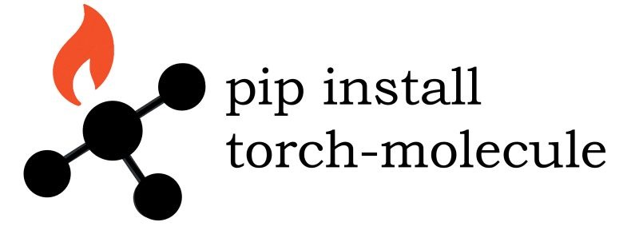

Hi! I am an Associate Professor and Frank M. Freimann Collegiate Professor of Computer Science and Engineering at the University of Notre Dame. I'm appointed as a Lucy Family Institute Fellow as well as the Program Chair of ND-IBM Tech Ethics Lab. I am also an Amazon Scholar. My research fields are AI and Data Science. I'm interested in text and graph data for applications such as material discovery, recommender system, question answering, education, and mental health. My recent projects focus on knowledge-augmented NLP, instructed LLM, self-correct LLM, personalized LLM, unlearned LLM, graph data augmentation, and graph diffusion model.
I am directing the Data Mining towards Decision Making (DM2) Lab, supported by National Science Foundation (NSF), National Institutes of Health (NIH), and Office of Naval Research (ONR).
[HIRING #1] The DM2 Lab at Notre Dame CSE is recruiting two PhD students and one postdoc to begin in Summer/Fall 2026. The research focuses on Machine Unlearning, Physical AI Safety, and AI Ethics. To apply, please visit this link. Feel free to reach out to me (mjiang2 [at] nd.edu) if you are interested!
I am also directing the Foundation Models and Applications Lab (FAML) at Lucy Institute. By harnessing cutting-edge foundation models, AI systems can rapidly adapt to diverse tasks, from accelerating material discovery to transforming education and healthcare into a more engaging, personalized experience.
- Tool for molecular discovery: torch-molecule is a package that facilitates molecular discovery through deep learning, featuring a user-friendly, sklearn-style interface. It includes model checkpoints for efficient deployment and benchmarking across a range of molecular tasks, including predictive models, generative models, and representation models.
- Modeling Polymers with Neural Networks is for polymer scientists that are interested in applying machine learning and neural networks. It is designed for college students and published by American Chemical Society in July 2025.
- Deep Learning for Polymer Discovery: Foundation and Advances is for scientists that are interested in advanceing deep learning and data science for polymer informatics. It is designed for graduate-level research and published by Springer in June 2025. (eBook on Google Play)
|
|
 |
|
|
[HIRING #2] The FAML Lab at Lucy Family Institute will be looking for one postdoctoral research associate to begin in Summer/Fall 2026 and be co-advised by me and Prof. Xiangliang Zhang. The research topic is Foundation Models and Applications, emphasizing interdisciplinary collaborations. To apply, please visit this link. Drop me an e-mail (mjiang2 [at] nd.edu) if you are interested!
What's New
- January 2026: Scientific AI Winter School at the University of Puerto Rico was successful! We presented learning and reasoning for molecular inverse design.
- December 2025: Welcome Weijiang (Vicky) Li to join our lab and the CSE PhD Program in January 2026! Gang Liu, with great work on AI for Science, is on the academic job market!
- October 2025: Mengxia's work on video-based educational question generation was accepted to EAAI!
- October 2025: We're proud to announce that Coefficient Giving is supporting our work on AI safety - Probing-Guided Robust Unlearning!
- September 2025: Yihan's work that learns repetition-invariant graph representations was accepted to NeurIPS!
- August 2025: "LLM Function Calling" (led by Hy Dang) and "Zipf's Law in Tokenization" (led by iSURE student Yanjin He) were accepted to EMNLP!
- June 2025: Zhihan Zhang and Lingbo Tong have successfully passed their dissertation defense. Congratulations, Dr. Zhang and Dr. Tong!
Latest Publications
- Graph Diffusion Transformers are In-Context Molecular Designers, ICLR, 2026.
- Dual-Space Smoothness for Robust and Balanced LLM Unlearning, ICLR, 2026.
- GEPA: Reflective Prompt Evolution Can Outperform Reinforcement Learning, ICLR, 2026.
- Context Selection and Rewriting for Video-based Educational Question Generation, EAAI, 2026.
- Learning Repetition-Invariant Representations for Polymer Informatics, NeurIPS, 2025.
- Pre-trained Models Perform the Best When Token Distributions Follow Zipf's Law, EMNLP, 2025.
- Improving Large Language Models Function Calling and Interpretability via Guided-Structured Templates, EMNLP, 2025.
- Leopard: A Vision Language Model for Text-Rich Multi-Image Tasks, TMLR, 2025.
- CodeTaxo: Enhancing Taxonomy Expansion with Limited Examples via Code Language Prompts, Findings of ACL, 2025.
- QG-SMS: Enhancing Test Item Analysis via Student Modeling and Simulation, ACL, 2025.
- Optimizing Decomposition for Optimal Claim Verification, ACL, 2025.
- Modality-Aware Neuron Pruning for Unlearning in Multimodal Large Language Models, ACL, 2025.
- Disentangling Biased Knowledge from Reasoning in Large Language Models via Machine Unlearning, ACL, 2025.
- Aligning Large Language Models with Implicit Preferences from User-Generated Content, ACL, 2025.
- Enhancing Mathematical Reasoning in LLMs by Stepwise Correction, ACL, 2025.
- UniConv: Unifying Retrieval and Response Generation for Large Language Model in Conversation, ACL, 2025.
- Protecting Privacy in Multimodal Large Language Models with MLLMU-Bench, NAACL, 2025.
- IHEval: Evaluating Language Models on Following the Instruction Hierarchy, NAACL, 2025.
- MultiChartQA: Benchmarking Vision-Language Models on Multi-Chart Problems, NAACL, 2025.
- Benchmarking Language Model Creativity: A Case Study on Code Generation, NAACL, 2025.
- Multimodal Large Language Models for Inverse Molecular Design with Retrosynthetic Planning, ICLR, 2025.
- Learning Molecular Representation in a Cell, ICLR, 2025.
Advised PhD Dissertations
- Daheng Wang: Learning Complementarity and Dynamics for Contextual Behavior Modeling (2021)
- Tong Zhao: Learning to Augment Data in Graphs (2022)
- Wenhao Yu: Knowledge Augmented Methods for NLP and Beyond (2023)
- Qingkai Zeng: Improving Scientific Information Extraction with Text Generation (2024)
- Zhihan Zhang: Instructing Language Models as Intelligent Assistants (2025)
- Lingbo Tong: Nonlinear Structural Equation Modeling with Text Data (2025)

|

|

|

|

|

|

|

|

|

|

|
Last updated on February 2, 2026.